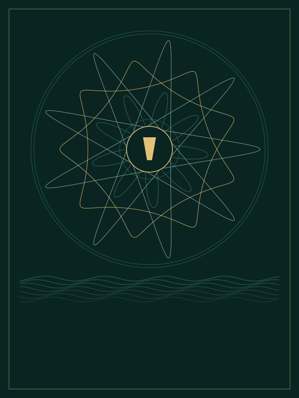

Generációváltás kézikönyv családi cégeknek: család, tulajdon, üzlet
A három kör modelltől a családi chartáig: miért halogatja az alapító az átadást, hogyan távoznak a vezetők, mi a négyféle átmenet, és hogyan lesz a családi egyetértésből kötelező erejű megállapodás.

Keybridge Exit Partners · KézikönyvGenerációváltás kézikönyv2026pozíció a három kör modellben, mindegyikből más kérdés látszik a legfontosabbnak
távozási stílus: uralkodó, hadvezér, nagykövet, kormányzó (Sonnenfeld, 1988)
interjúra épül a négy átmeneti stratégia kutatása
a nem családi vezetést választók ekkora részénél az utód nem mutatott motivációt
- Egy családi cégben mindenki három rendszer metszetében áll: család, tulajdon, üzlet. A konfliktusok többsége nem személyes, hanem pozícióból fakad.
- Az exit érzelmi döntés pénzügyi köntösben. Amíg az alapító nem tudja, mit csinál utána, nem fog átadni.
- A generációváltás nem egy nap, hanem négy szakasz, és az átadás utáni évek döntik el a cég teljesítményét.
- A családi charta a családi egyetértést rögzíti. Ami kötelező erejű kell legyen, azt szerződésbe kell átvinni.
1. A három kör: honnan nézi a családtag a céget?
Renato Tagiuri és John Davis modellje szerint egy családi cégben mindenki három rendszer metszetében áll: család, tulajdon és üzlet. A három kör hét pozíciót ad, és minden pozícióból más kérdés tűnik a legfontosabbnak.
| Pozíció | Tipikus szereplő | Jellemző kérdés | |
|---|---|---|---|
| 1 | Csak család | A cégben nem dolgozó, nem tulajdonos házastárs vagy gyerek | Mi lesz velünk, ha apa elad? |
| 2 | Csak tulajdon | Külső befektető, kilépett társ | Mennyi az osztalék, mennyit ér a részem? |
| 3 | Csak üzlet | Nem családtag vezető vagy munkavállaló | Van itt jövőm, ha a fiú veszi át? |
| 4 | Család és tulajdon | Örökös, aki nem dolgozik a cégben | Miért kap a testvérem fizetést, én meg csak osztalékot? |
| 5 | Család és üzlet | Családtag munkavállaló tulajdon nélkül | Mikor kapok részt a cégből? |
| 6 | Tulajdon és üzlet | Nem családtag tulajdonos vezető | Ki dönt valójában? |
| 7 | Mindhárom | Az alapító, később az utód | Hogyan engedjem el? |
A modell legnagyobb haszna: ugyanazt az osztalékdöntést a cégben nem dolgozó örökös egészen másnak látja, mint az alapító. Mielőtt bármi eldőlne, minden érintettet érdemes elhelyezni a térképen, és külön megkérdezni tőle: mit jelent neked ez a cég?
Kétértékű tulajdonságok
Tagiuri és Davis 1996-os cikke szerint a családi cég sajátos vonásai kétértékűek: ugyanaz a vonás előny és hátrány is lehet.
| Vonás | Előnyös oldala | Hátrányos oldala |
|---|---|---|
| Közös identitás | Lojalitás, elkötelezettség | A cég kritikája családi sértésnek hat |
| Hosszú közös múlt | Gyors, bizalmon alapuló döntés | Régi sérelmek a tárgyalóasztalnál |
| Egyszerre több szerep | Rugalmasság | Összemosódó felelősség |
| Érzelmi bevonódás | Kitartás válságban | Irracionális döntések, például jó ajánlatok elutasítása |
| Saját belső nyelv | Gyors információáramlás | A nem családtag vezetők kirekesztése |
A cél nem a családi vonások megszüntetése, hanem az, hogy az előnyös oldal megmaradjon, a hátrányosat pedig szabályok ellensúlyozzák: döntési mátrix, piaci bér, írásos megállapodások.
2. Az alapító lélektana: miért halogatunk?
Az exit érzelmi döntés pénzügyi köntösben. A tulajdonos ritkán mondja ki, de a halogatás mögött jellemzően ugyanazok a félelmek állnak.
- Identitás: a cég az alapító személyiségének része, a kilépés szerepvesztés.
- Kontroll: évtizedekig minden döntés rajta ment át, és nem bízik abban, hogy más is jól dönt.
- Mit csinálok hétfőn? Nincs terve az átadás utáni életre.
- Felelősség a régi munkatársak és a család iránt.
- A házastárs: gyakran ő a csendes döntéshozó, mégis kimarad a beszélgetésekből.
Hogyan távoznak a vezetők
Jeffrey Sonnenfeld The Hero's Farewell című könyve négy távozási stílust ír le.
| Típus | Hogyan távozik | Mit jelent az utódlásnak |
|---|---|---|
| Uralkodó | Nem önként távozik | Az utódot fenyegetésnek látja, és aláássa |
| Hadvezér | Kelletlenül távozik, és visszatérésre készül | A visszatérés szabotálja az utódot |
| Nagykövet | Méltósággal távozik, szoros kapcsolatban marad | Tanácsadóként támogatja az utódot |
| Kormányzó | Meghatározott ideig vezet, majd új kihívást keres | Tiszta átadás, új szerep máshol |
Amíg a tulajdonos nem tudja, mit csinál az átadás után, nem fog átadni, bármit mutat a táblázat.
Az érzelmi vagyon
A családi tulajdonosok nem csak pénzügyi hozamot várnak a cégtől, hanem kontrollt, identitást, a család nevét és a generációkon átívelő folytonosságot is. A kutatás ezt szocioemocionális vagyonnak hívja. Gómez-Mejía és társai 1 237 spanyol családi olajütő 54 évének adatain mutatták ki, hogy a családi cégek a kontroll megőrzéséért még a kockázatot csökkentő szövetkezeti csatlakozást is elutasították.
Ennek ára van az eladásnál is: minél erősebb a szándék, hogy a cég generációkon át családi kézben maradjon, annál magasabb árat tart elfogadhatónak a tulajdonos. Ezért kell független értékelés, mielőtt a család árakról kezd beszélni.
3. A négy szakasz: a váltás nem egy nap
A generációváltás évekig tartó folyamat, amelyben a vezetés, a tulajdon és a családi szerepek egyszerre változnak. A klasszikus modellek többsége az átadással véget ér. A kutatások szerint viszont az átadás utáni évek döntik el, mi lesz a cég teljesítményével.
| Szakasz | Amitől sikerül | Amin elbukik |
|---|---|---|
| 1. Felkészülés | Utódlástervezés, vezetőfejlesztés, irányítási struktúrák | Ellenállás a változással szemben, elégtelen képzés |
| 2. Átmenet | A szerepek tisztázása, kommunikáció, jogi és pénzügyi kérdések rendezése | Családi konfliktusok |
| 3. Integráció | Kulturális összehangolás, stratégiai tervezés, professzionalizálás | A stratégiai jövőkép hiánya |
| 4. Konszolidáció | Teljesítménykövetés, folyamatos tanulás, az örökség megőrzése | Érzelmi kötődés, az átadó identitásproblémái |
Hogy az átadásnak ára van, azt 5 334 dán utódlás elemzése is mutatja: a családi vezetőváltás körül a működési eszközarányos eredmény legalább 4 százalékponttal esik. Egy másik vizsgálat 209 második vagy harmadik generációs cég adatai alapján arra jutott, hogy az átmenet simább, ha az örökös felkészült, és a családi kapcsolatok bizalmon alapulnak.
4. Négyféle átmenet: előbb a stratégia
Jaskiewicz, De Massis és Dieleman egy évtizedes, több mint 400 interjúra épülő kutatási program alapján két tényezőt tart döntőnek: mennyire összetartó a család a generációk között, és mennyire rugalmas a hivatalban lévő vezető.
| Kevésbé rugalmas átadó | Rugalmas átadó | |
|---|---|---|
| Összetartó család | Megfiatalítás. A fiatalok a családi hagyományt viszik tovább, akár a saját ambícióik rovására. Gyakran a legsimább átmenet. | Újjászületés. A generációk nyíltan együtt döntenek, és az utód az átadó támogatásával akár az üzleti modellt is átalakíthatja. |
| Lazább kötésű család | Kiszállás. A család kiszáll a cégből, például eladja. Ilyen helyzetben gyakran ez a bölcsebb út. | Új utak. A fiatalok a család támogatásával új, a családi céghez csak lazán kapcsolódó vállalkozásokat építenek. |
A szerzők egy 2017-es kutatásra hivatkozva azt is írják, hogy a millenniumi generációnak csak 4,9 százaléka akarja átvenni a családi vállalkozást. A kiszállás tehát nem kudarc: az olasz Merloni család az Indesit eladásával döntött így.
5. Az utód: négy kérdés a névválasztás előtt
Egy 301 hazai kkv-t vizsgáló 2021-es felmérésben a tulajdonosok 94 százaléka már döntött az utódról, de csak 65 százalék jelentette be. Ahol végül nem családtag vitte tovább a céget, ott az okok így oszlottak meg:
- Akarja-e? Ezt az utódtól kell megkérdezni, úgy, hogy nemet is mondhasson.
- Felkészült-e? Egyéni fejlesztési terv, mentor, és valódi felelősség saját eredménykimutatással.
- Tudja-e a cég? A bejelentés bizalmat és időt ad a vezetőknek, a vevőknek és a banknak.
- Rendben a család? Ki dolgozik a cégben, ki csak tulajdonos, ki mit kap: írásban.
6. Családi charta és testületek
A családi charta a család közös megállapodása arról, hogyan viszonyul a céghez. Tipikus fejezetei:
- értékek, és a cég célja a család számára,
- ki dolgozhat a cégben, milyen végzettséggel, tapasztalattal és bérrel,
- a házastársak szerepe,
- a tulajdon átruházása: kinek adható, elővásárlási jog, mi történik válásnál,
- osztalékpolitika,
- döntéshozatal, vitarendezés, mediáció,
- a következő generáció felkészítése,
- kilépés: hogyan és milyen áron vásárolható ki a kilépni akaró családtag.
| Testület | Kik | Mire való |
|---|---|---|
| Családi gyűlés | Minden felnőtt családtag | Tájékoztatás, összetartozás, évente egy vagy két alkalom |
| Családi tanács | A családi ágak képviselői | A charta betartása, családi ügyek, negyedévente |
| Tulajdonosi tanács vagy igazgatóság | Tulajdonosok, független tag | Stratégia, az ügyvezetés felügyelete, osztalék |
7. Háromféle konfliktus, és mit kezdjünk velük
Kellermanns és Eddleston modellje háromféle konfliktust különböztet meg a családi cégekben:
- Feladatkonfliktus: vita arról, mit csináljon a cég. Stratégia, termék, piac.
- Folyamatkonfliktus: vita arról, ki mit és hogyan csinál. Szerepek, erőforrások.
- Kapcsolati konfliktus: személyes ellentét, sértettség.
A gyakorlati következtetés: a szakmai vitát nem elfojtani kell, hanem leválasztani a személyes sérelmekről. Ehhez szabályok, testületek és szükség esetén mediátor kell. Több mint 500 ausztrál családi cég vizsgálata szerint a családi irányítás csökkenti a kapcsolati konfliktus kárát, de egymagában nem szünteti meg.
8. Tartós keret: mikor segít a bizalmi vagyonkezelés?
Ha a család igényli, a bizalmi vagyonkezelés rendezheti az átmenetet. A vagyonkezelő addig tartja a részesedést, amíg az utód teljesíti az előre rögzített feltételeket, például két évig sikeresen vezette a céget. A testvérek közötti egyensúly és a cégben dolgozó, illetve nem dolgozó családtagok osztaléka írásban rendezett.
Adótervezésre 2026. augusztus 31. óta nem alkalmas: az értéke az irányításban és az öröklés rendezésében van. Így működik
9. Hat kérdés az első családi beszélgetéshez
- Ha holnap reggel nem kellene bejönnöm, mit csinálnék?
- Ki az a három ember, akin a cég ma a leginkább múlik?
- Mi történt, amikor utoljára két hétig szabadságon voltam?
- Beszéltem már erről a házastársammal és a gyerekeimmel? Mit mondtak?
- Milyen ár alatt nem adnám el a céget, és honnan jön ez a szám?
- Mit szeretnék, mit mondjanak a cégről tíz év múlva?
- Tagiuri, R., Davis, J. A. (1996): Bivalent attributes of the family firm. Family Business Review, 9(2).
- Lansberg, I. (1988): The succession conspiracy. Family Business Review, 1(2).
- Sonnenfeld, J. (1988): The Hero's Farewell: What Happens When CEOs Retire. Oxford University Press.
- Gómez-Mejía, L. R. és társai (2007): Socioemotional wealth and business risks in family-controlled firms. Administrative Science Quarterly, 52(1).
- Zellweger, T. M., Kellermanns, F. W., Chrisman, J. J., Chua, J. H. (2012): Family control and family firm valuation by family CEOs. Organization Science, 23(3).
- Bennedsen, M., Nielsen, K. M., Pérez-González, F., Wolfenzon, D. (2007): Inside the family firm. Quarterly Journal of Economics, 122(2).
- Morris, M. H., Williams, R. O., Allen, J. A., Avila, R. A. (1997): Correlates of success in family business transitions. Journal of Business Venturing, 12(5).
- Jaskiewicz, P., De Massis, A., Dieleman, M.: a négy átmeneti stratégia kutatási programja, több mint 400 interjú.
- Kellermanns, F. W., Eddleston, K. A. (2004): Feuding families: When conflict does a family firm good. Entrepreneurship Theory and Practice, 28(3).
- Budapesti Corvinus Egyetem (2021): felmérés 301 hazai kis- és középvállalkozás körében.
Ez az útmutató általános tájékoztatás, nem jogi, adó vagy befektetési tanácsadás. Konkrét ügyben ügyvéddel és bejegyzett adótanácsadóval kell egyeztetni. A számpéldák illusztrációk, nem ígéretek. A jogi és adózási leírások a 2026 őszi állapotot tükrözik. © 2026 Keybridge Exit Partners